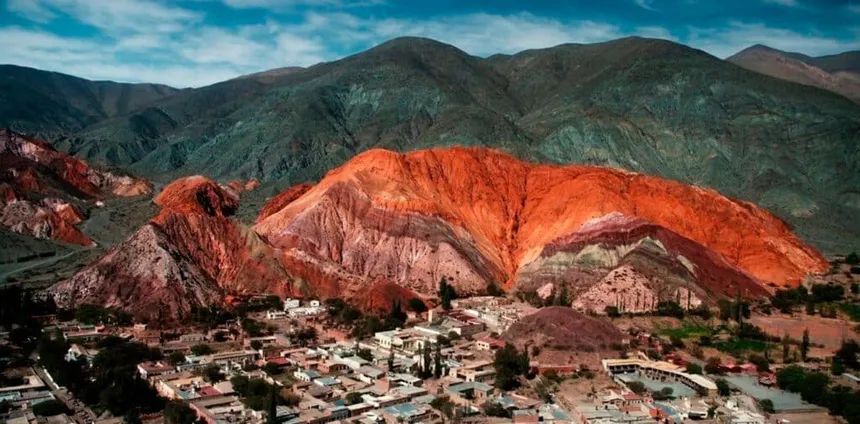
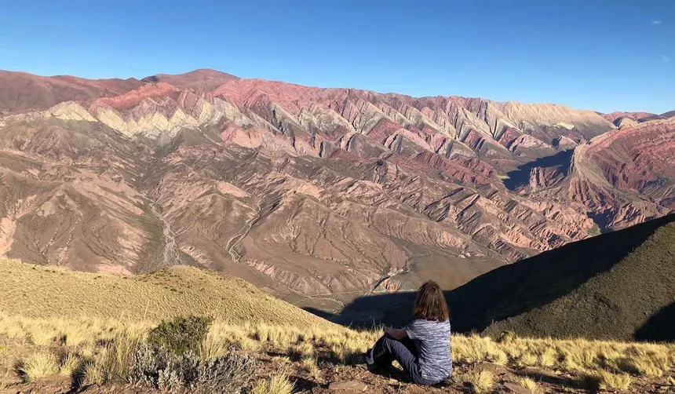
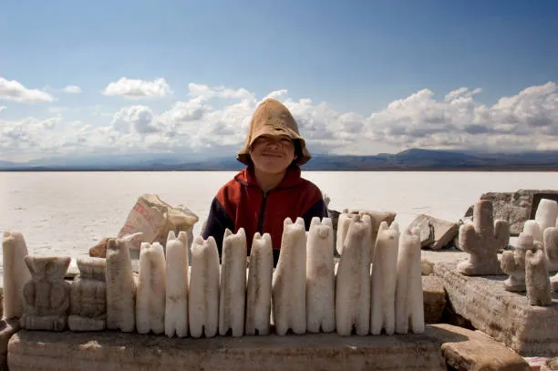

Cerros multicolores, valles ancestrales y la Puna viva
Los imperdibles de la provincia

El cerro de los 7 colores y el pintoresco pueblo andino.

El mítico cerro de 14 colores a 4.350 msnm.

El desierto de sal más imponente de Sudamérica.
Visitantes por año
Circuitos turísticos
Agencias aliadas
Experiencias reales
"Las Salinas Grandes son mágicas al atardecer. Una experiencia única que recomiendo a todos."
"El Hornocal te deja sin aliento. Los 14 colores superan todas las expectativas. Imperdible."
"Purmamarca es un sueño. La gente, la comida, los paisajes... todo es increíble. Volveré."